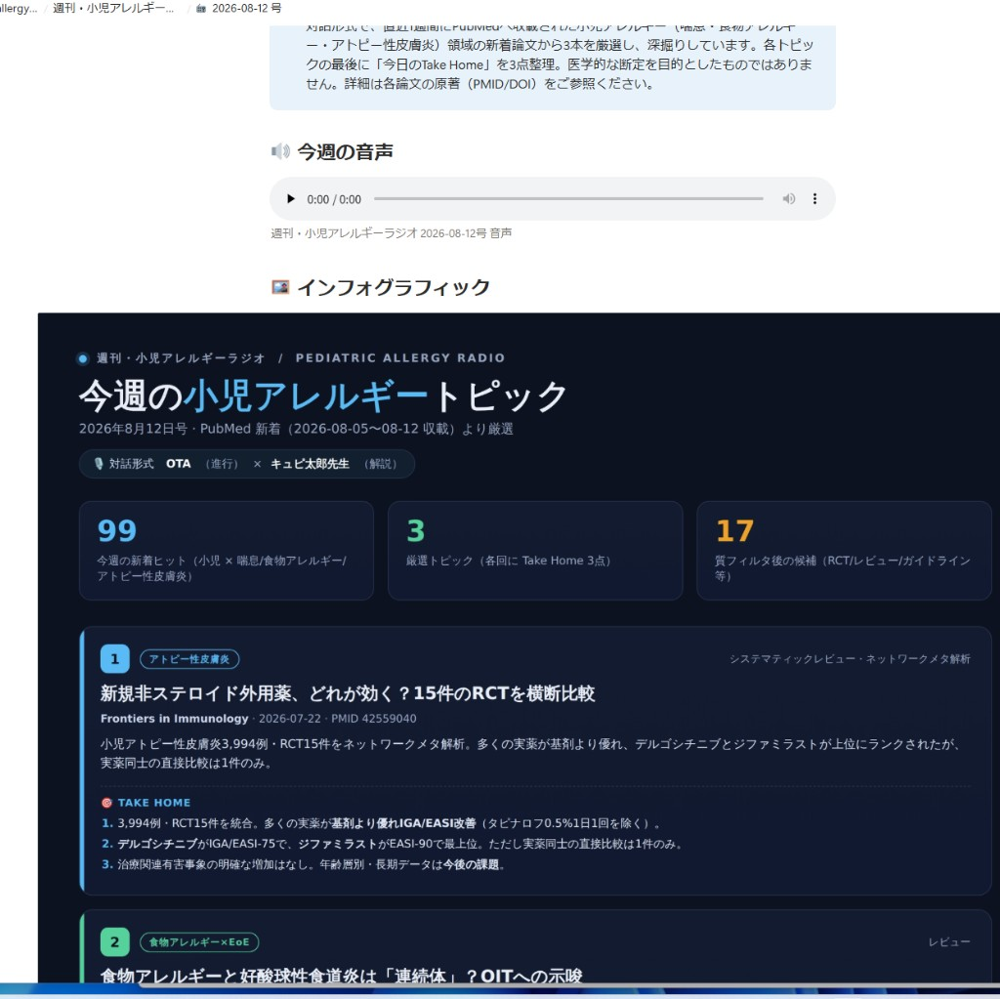

週刊・小児アレルギーラジオ
PubMed の新着論文を、毎週自動で「聞けるラジオ」に変えて届ける仕組みの図解
話者紹介
OTA
進行役
声: Algieba（Gemini TTS）
ゆっくり・短く・落ち着いて・明瞭。聞き手として論文の要点を引き出す。
キュピ太郎先生
解説役
声: Laomedeia（Gemini TTS）
甲高いハイテンション。「だね」「だよ」「〜きゅぴ」の語尾で、小児アレルギーを解説する。
作ったもの
毎週、Notion に届く完成品の一例（2026年8月12日号）。
- 対話台本 — 進行役 OTA × 解説役 キュピ太郎先生の2人掛け
- 音声（MP3） — Gemini マルチスピーカー TTS、約8〜10分
- インフォグラフィック — 各論文の Take Home 3点を1枚に
- Notion ページ — 音声をページ内でそのまま再生できる

解決する面倒・課題
小児アレルギー領域の新着論文が多すぎて、毎週追いきれない。
1週間で PubMed に数十〜百件以上ヒットすることも珍しくありません（例: 99件ヒット → 質フィルタ後17件 → 厳選3本）。
さらに、論文を「読む」という手間を減らし、昼休みに耳から情報をインプットできる形に変えたい。移動中や短い休憩時間でも、臨床に近いトピックをキャッチアップできるようにする。
作りたいと思った理由
自分の専門である小児アレルギーの新着を逃したくないから。臨床に直結する領域だからこそ、毎週のキャッチアップに意味がある。
論文を読む時間は昼休みにしか取れない。だから「読む」より「聞く」に寄せた。
きっかけの参考にしたのは、他領域の「週刊ラジオ」自動配信の事例（小児腎臓病ラジオなど）。「自分の領域でも同じことができる」と思った。
工夫したポイント
- 認証を2系統に分けた — PubMed / Notion は Claude コネクタ経由、Gemini 音声は環境変数から直接。ネットワーク設定をいじらずに動く。
- 番組設定を1ファイルに集約 —
prompts/weekly_radio_prompt.md の設定欄だけ編集すれば、次回の自動実行から反映。Routine のプロンプトは触らない。
- Take Home 3点 + インフォグラフィック — 聞いたあと、図で復習できる。各論文の臨床的含意を持ち帰りやすくした。
- GitHub raw URL → Notion 埋め込み — MP3 と PNG を push し、Notion ページ内で音声再生・画像表示できる形にした。
苦戦したポイント
- 進行役 OTA と キュピ太郎先生に合う声の選定 — Gemini TTS のプリセットを何度も試した。OTA は Algieba（ゆっくり・明瞭）、キュピ太郎先生は Laomedeia（ハイテンション）。台本の語尾（「だね」「だよ」「きゅぴ」）と TTS のスタイル指示も調整した。
- 医学的内容の正確性 — 自動要約なので、臨床判断の根拠には使えない。台本・ページには必ず PMID を入れ、原著にあたる前提で設計した。
仕組みの流れ
毎週月曜、Claude Routine が新しいセッションを起動し、以下を自律実行する。
毎週月曜 Routine 発火
→
PubMed 直近7日検索
→
3本厳選・台本執筆
→
Gemini TTS → MP3
→
インフォグラフィック PNG
→
GitHub push
→
Notion 掲載
一度設定すれば、以降は何もしなくても毎週届く。
技術スタック
定期実行
Claude Code Routine（毎週月曜）
音声合成
Gemini TTS（マルチスピーカー）
配信・保存
GitHub（Public / raw URL）
図解生成
自己完結 HTML → PNG（Playwright）
設定の正典
prompts/weekly_radio_prompt.md